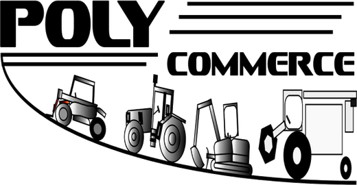
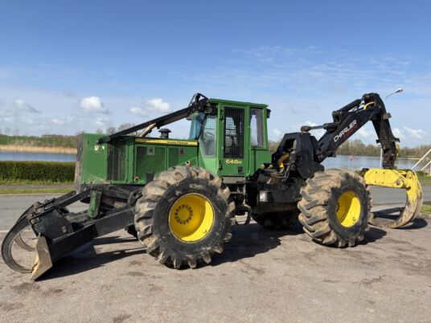
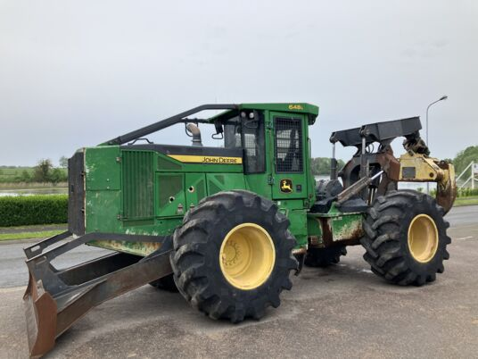
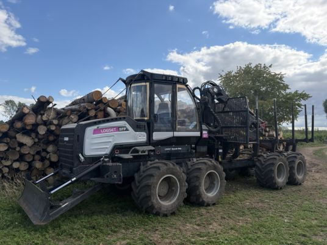
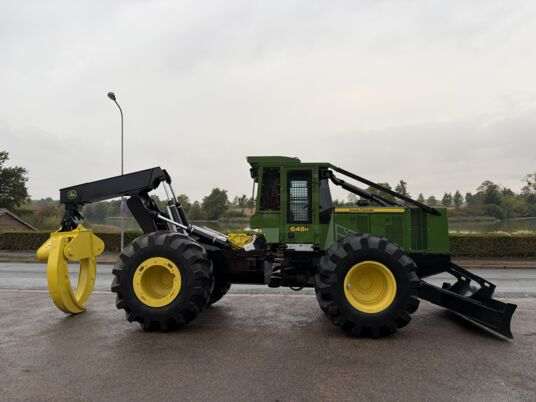
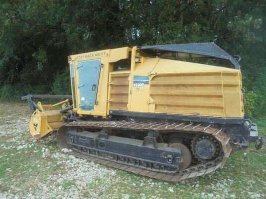

✆ 06 87 85 84 36
Forêt
TP
Agricole

1 / 6 · glissez
‹
›
Débusqueur avec grue Charlier
John Deere 648 H
Année
2011
Heures
8 850
Prix HT
178 800 €
Heures d'origine
0
8
8
5
0
h
Appeler
Toutes les photos




la suite →